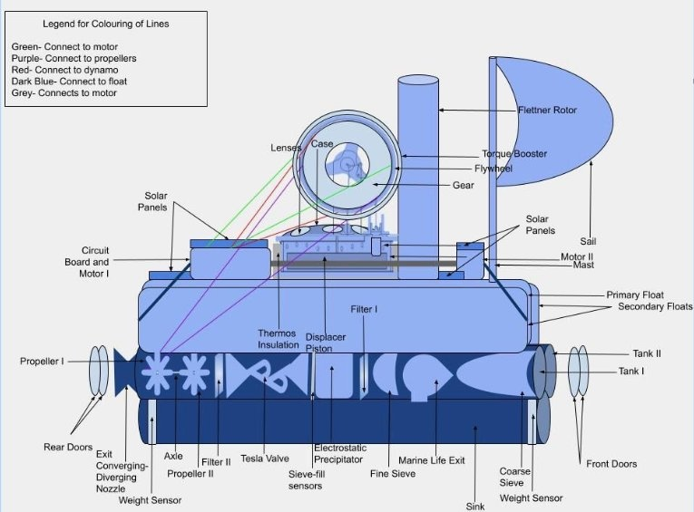
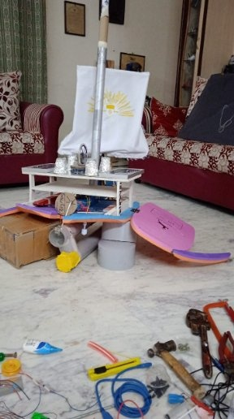

// 01 — Overview
What Is It?
The Autonomous Ocean-Cleaning Buoy is a floating robotic platform engineered to navigate water surfaces and collect floating debris autonomously. Motivated by the growing crisis of marine plastic pollution, the project demonstrates how low-cost robotics can provide a scalable solution for waterway cleaning.
The buoy integrates a custom CAD-designed chassis, Arduino-based motor and sensor control, and autonomous navigation logic to sweep and collect trash without human intervention. The project earned 2nd Place (Runners-Up) at the prestigious IIT Madras Make-a-Thon competition.
// 02 — Gallery
Photos & Demo

Technical diagram — mechanical and electronic system overview

The finished buoy robot
%20(1).jpg)
Team at IIT Madras Make-a-Thon 2022
// 03 — Technical Stack
How It Works
HARDWARE
DESIGN
SYSTEMS
Mechanical Design
Designed the buoy chassis and collection mechanism in CAD (Fusion 360), optimising for buoyancy, stability, and compact motor mounting. Iterated through multiple prototypes.
Electronics Integration
Wired and programmed an Arduino-based control system: motor drivers for propulsion, ultrasonic sensors for obstacle detection, and servo actuation for the collection scoop.
Autonomous Navigation
Implemented a sweep-and-collect navigation algorithm that guides the buoy across a defined water area, avoiding obstacles and depositing collected debris into an onboard bin.
// 04 — Documents & Files
Resources
// 05 — Results & Impact
Outcome
2nd
Place (Runners-Up) — IIT Madras Make-a-Thon 2022
Fully
Autonomous sweep-and-collect operation with no human input
Low-cost
Scalable hardware design using off-the-shelf Arduino components